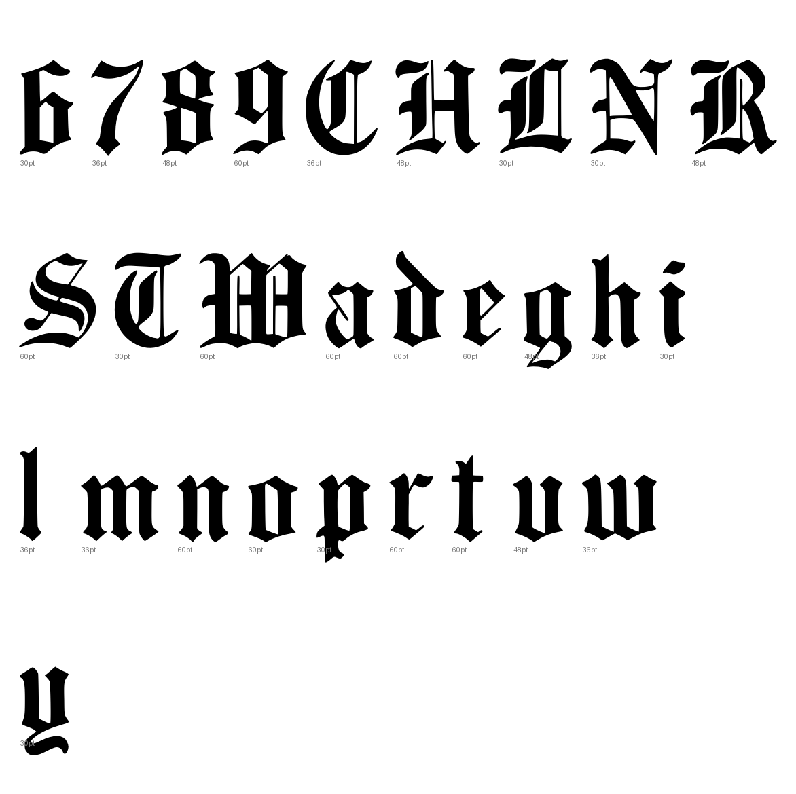

Gray letters are constructed, not traced.

1 warnings, 8 notes.
[
{
"level": "warn",
"check": "contours",
"glyph": "W",
"value": 5,
"note": "more than four contours; specks or a broken trace"
},
{
"level": "info",
"check": "specks",
"glyph": "R",
"value": 1,
"note": "marks beside the letter were recorded, not cut"
},
{
"level": "info",
"check": "pieces",
"glyph": "R",
"value": 3,
"note": "the cut joined more than one ink component"
},
{
"level": "info",
"check": "pieces",
"glyph": "H",
"value": 3,
"note": "the cut joined more than one ink component"
},
{
"level": "info",
"check": "specks",
"glyph": "r.48pt_2",
"value": 1,
"note": "marks beside the letter were recorded, not cut"
},
{
"level": "info",
"check": "specks",
"glyph": "d.48pt_2",
"value": 1,
"note": "marks beside the letter were recorded, not cut"
},
{
"level": "info",
"check": "specks",
"glyph": "w",
"value": 1,
"note": "marks beside the letter were recorded, not cut"
},
{
"level": "info",
"check": "pieces",
"glyph": "L",
"value": 2,
"note": "the cut joined more than one ink component"
},
{
"level": "info",
"check": "specks",
"glyph": "d.30pt_3",
"value": 1,
"note": "marks beside the letter were recorded, not cut"
}
]
{
"480:60pt": {
"n_caps": 2,
"cap_height_px": 253.5,
"cap_source": "caps",
"baseline_px": 3505.5,
"baselines": {
"8": 3505.5
},
"glyphs": [
"S",
"o",
"n",
"a",
"t",
"a.60pt",
"nine",
"W",
"o.60pt",
"n.60pt",
"d",
"e",
"r"
],
"x_height_px": 177.0,
"figure_height_px": 252,
"stem_px": 6.5,
"scale": 2.76134,
"stem_units": 17.9,
"x_height": 489,
"figure_height": 696
},
"480:48pt": {
"n_caps": 2,
"cap_height_px": 205.5,
"cap_source": "caps",
"baseline_px": 3043.5,
"baselines": {
"7": 3043.5
},
"glyphs": [
"R",
"e.48pt",
"v",
"e.48pt_2",
"n.48pt",
"g",
"e.48pt_3",
"r.48pt",
"eight",
"H",
"a.48pt",
"r.48pt_2",
"d.48pt",
"e.48pt_4",
"n.48pt_2",
"e.48pt_5",
"d.48pt_2"
],
"x_height_px": 143.0,
"figure_height_px": 204,
"stem_px": 5.5,
"scale": 3.40633,
"stem_units": 18.7,
"x_height": 487,
"figure_height": 695
},
"480:36pt": {
"n_caps": 4,
"cap_height_px": 154.5,
"cap_source": "caps",
"baseline_px": 2616.0,
"baselines": {
"6": 2616.0
},
"glyphs": [
"S.36pt",
"m",
"a.36pt",
"l",
"l.36pt",
"C",
"h",
"a.36pt_2",
"n.36pt",
"g.36pt",
"e.36pt",
"seven",
"C.36pt",
"a.36pt_3",
"m.36pt",
"e.36pt_2",
"S.36pt_2",
"l.36pt_2",
"o.36pt",
"w"
],
"x_height_px": 108,
"figure_height_px": 156,
"stem_px": 5.0,
"scale": 4.53074,
"stem_units": 22.7,
"x_height": 489,
"figure_height": 707
},
"480:30pt": {
"n_caps": 4,
"cap_height_px": 126.5,
"cap_source": "caps",
"baseline_px": 2270.0,
"baselines": {
"5": 2270.0
},
"glyphs": [
"N",
"e.30pt",
"a.30pt",
"t.30pt",
"C.30pt",
"o.30pt",
"m.30pt",
"p",
"l.30pt",
"i",
"m.30pt_2",
"e.30pt_2",
"n.30pt",
"t.30pt_2",
"six",
"T",
"e.30pt_3",
"n.30pt_2",
"d.30pt",
"e.30pt_4",
"r.30pt",
"e.30pt_5",
"d.30pt_2",
"L",
"a.30pt_2",
"d.30pt_3",
"y"
],
"x_height_px": 89.0,
"figure_height_px": 126,
"stem_px": 4.0,
"scale": 5.5336,
"stem_units": 22.1,
"x_height": 492,
"figure_height": 697
}
}
{
"archive_id": "bookoftypespecim00barnrich",
"title": "Book of type specimens. Comprising a large variety of superior copper-mixed types, rules, borders, galleys, printing presses, electric-welded chases, paper and card cutters, wood goods, book binding machinery etc., together with valuable information to the craft. Specimen book no.9",
"creator": [
"Barnhart, bros. & Spindler, firm, type founders, Chicago",
"De Young family",
"De Young, Charles, 1881-"
],
"publisher": "Chicago, Barnhart bros. & Spindler",
"date": "[1907]",
"ppi": 400,
"url": "https://archive.org/details/bookoftypespecim00barnrich",
"copyright_status": "NOT_IN_COPYRIGHT",
"contributor": "University of California Libraries",
"leaves": [
480
]
}